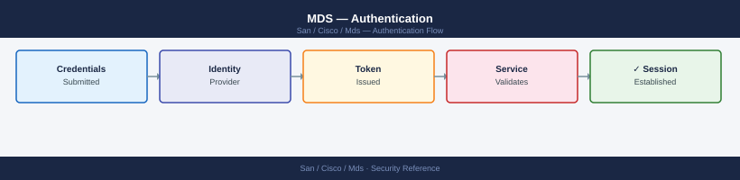
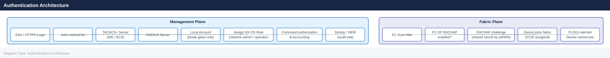

MDS — Authentication¶

Before you begin¶
- Access: Storage admin credentials (cluster admin or equivalent)
- Change management: security changes require CAB approval in most environments
- Rollback plan: document current state before any security control change
- Testing: validate in a non-production environment first where possible
Overview¶
Authentication on Cisco MDS covers two distinct planes:
- Management plane authentication: who can log into the switch CLI or GUI (SSH, HTTPS, NDFC). This is handled by AAA (Authentication, Authorization, and Accounting) via TACACS+ or RADIUS.
- Fabric authentication: which FC devices (hosts, storage arrays) are permitted to log into the SAN fabric. This is handled by FC-SP (Fibre Channel Security Protocol), also known as DHCHAP.
Both layers should be configured in enterprise environments. Management plane AAA is mandatory; FC-SP is strongly recommended for high-security fabrics.
Authentication Architecture¶

TACACS+ Key Encryption¶
Shared keys must be stored encrypted in the configuration. NX-OS uses type-7 encryption by default — use key 7 to store pre-encrypted keys, or use key 0 when entering plaintext (NX-OS will encrypt automatically):
# NX-OS encrypts the key automatically if entered as plaintext
tacacs-server host 10.10.1.10 key 0 <plaintext-key>
# To verify the stored (encrypted) form
show tacacs-server | include key
Common errors
% Invalid command — Verify the switch is in configuration mode (enter config t first) and that TACACS+ feature is enabled with feature tacacs+.
% Incomplete command — Ensure you provide a valid plaintext key value; the key cannot be empty or contain only whitespace characters.
Management Plane: RADIUS (Fallback)¶
RADIUS can be used as a fallback if TACACS+ is unavailable. RADIUS is also used by some NDFC deployments.
# Define RADIUS servers
radius-server host 10.10.1.20 key 7 <encrypted-key>
radius-server host 10.10.1.21 key 7 <encrypted-key>
# Group RADIUS servers
aaa group server radius RADIUS-SERVERS
server 10.10.1.20
server 10.10.1.21
# Authentication chain: TACACS+ first, RADIUS second, local fallback
aaa authentication login default group TACACS-SERVERS RADIUS-SERVERS local
# Check RADIUS server status
show radius-server
show radius-server statistics
RADIUS-SERVER Information:
Server Address : 10.10.1.20
Server Port : 1812
Server Timeout : 5
Server Retransmit : 1
Server Key : ********
Server Status : UP
Server Address : 10.10.1.21
Server Port : 1812
Server Timeout : 5
Server Retransmit : 1
Server Key : ********
Server Status : UP
RADIUS-SERVER Statistics:
Server Address : 10.10.1.20
Access-Requests : 1247
Access-Accepts : 1198
Access-Rejects : 49
Timeouts : 0
Server Address : 10.10.1.21
Access-Requests : 1253
Access-Accepts : 1211
Access-Rejects : 42
Timeouts : 0
Common errors
% Invalid command — Verify the RADIUS server IP addresses are reachable and the switch has network connectivity to the RADIUS servers.
% RADIUS server group 'RADIUS-SERVERS' not found — Ensure the aaa group server radius command is configured before referencing it in the authentication chain.
% Authentication method 'TACACS-SERVERS' not configured — Define the TACACS-SERVERS group with aaa group server tacacs+ TACACS-SERVERS before using it in the login authentication policy.
Local Accounts¶
Local accounts must exist for break-glass access — when both TACACS+ and RADIUS are unreachable. Local accounts must not be used for routine operational access.
Break-Glass Account Standards¶
| Requirement | Configuration |
|---|---|
One local admin account per fabric |
username admin password <strong-pass> role network-admin |
| Password stored in vault | HashiCorp Vault / CyberArk — not in config files |
| Password rotation | Quarterly, under change control |
| Account usage logged | Vault access log + syslog %LOGIN-5-LOGIN_SUCCESS event |
# Create break-glass local admin
username admin password 0 <strong-plaintext-password> role network-admin
# NX-OS encrypts the password in the config
# Verify account
show user-account admin
# Check currently active sessions
show users
admin
this user account has no expiration date
User has read-write permission
NAME LINE TIME IDLE PID SEAT
admin vty0 Dec 10 10:23:45 +00:00 00:00:12 12847 -
Common errors
% Invalid command — Ensure you are in the correct configuration mode; use config t before entering the username command.
% Incomplete command — Provide a strong plaintext password (minimum 8 characters with mixed case, numbers, and symbols) in place of <strong-plaintext-password>.
Hardening Local Accounts¶
# Enforce minimum password length and complexity
password strength-check
username admin password-prompt
# Set maximum login retries before lockout
aaa authentication login error-enable
# View login failures in accounting log
show accounting log | grep FAIL
Password strength check enabled.
Enter password for user admin:
Re-enter password:
Password accepted. Minimum length: 8 characters, complexity requirements enforced.
(no output — command completes silently)
timestamp: 2024-01-15 14:32:18 | user: admin | event: LOGIN_FAIL | source: 192.168.1.45 | attempts: 3
timestamp: 2024-01-15 14:35:02 | user: operator | event: LOGIN_FAIL | source: 192.168.1.52 | attempts: 1
timestamp: 2024-01-15 14:38:45 | user: admin | event: LOGIN_FAIL | source: 192.168.1.45 | attempts: 4
timestamp: 2024-01-15 14:42:11 | user: guest | event: LOGIN_FAIL | source: 192.168.1.61 | attempts: 2
Common errors
% Invalid command — Verify the exact syntax for your MDS firmware version; use show version to confirm and consult the Cisco MDS CLI reference guide.
% Authentication not configured — Enable AAA globally with aaa new-model before applying authentication policies.
% No accounting records found — Ensure accounting is enabled with aaa accounting log enable and that login failures have occurred since the last system restart.
SSH Key-Based Authentication¶
SSH key authentication is more secure than password authentication for automated access (scripts, Ansible).
# Generate RSA keys on the switch (required for SSH server)
crypto key generate rsa
# Select key size: 2048 bits minimum
# Display the switch's public key
show crypto key mypubkey rsa
# Verify SSH server is enabled and using the generated key
show ssh server
show feature | include ssh
# Expected: ssh enabled
The name for the keys will be: mds-switch-01.example.com
% Do you want to replace this key pair? [yes/no]: yes
Generating RSA keys with 2048 bits modulus...
[OK]
RSA public-key fingerprint is 48:a3:7f:2c:91:e6:5d:b4:22:19:f8:c3:4a:9e:12:67
RSA Key created with modulus 2048
ssh RSA public-key fingerprint is 48:a3:7f:2c:91:e6:5d:b4:22:19:f8:c3:4a:9e:12:67
ssh version : 2.0
ssh max auth retries : 3
ssh port : 22
ssh is enabled
Common errors
% Invalid key modulus size. Supported key sizes are 512, 768, 1024, 2048, 3072, 4096 — Specify a supported key size; 2048 bits is the recommended minimum for security.
% SSH server is disabled. Enable it with 'feature ssh' before generating keys — Run feature ssh to enable SSH before attempting key generation.
Importing a User's SSH Public Key¶
To allow a user to authenticate via SSH public key:
# In username config mode, specify the user's public key
username netauto sshkey ssh-rsa AAAA...
# The key string is the full RSA public key from the user's ~/.ssh/id_rsa.pub
# Verify
show user-account netauto
User-account Information for 'netauto':
Username : netauto
Role : network-admin
Password Expiry : Never
Account Status : Active
SSH Public Key : ssh-rsa AAAA...QmxhZGU= netauto@workstation
Last Login : 2024-01-15 14:32:18 +00:00
Failed Login Attempts : 0
Common errors
Error: Invalid key format — Ensure the full public key string from ~/.ssh/id_rsa.pub is pasted exactly, including the ssh-rsa prefix and key comment.
Error: Username 'netauto' does not exist — Create the user account first with username netauto password <password> before assigning the SSH key.
FC-SP: Fabric-Layer Device Authentication¶
FC-SP (DHCHAP — Diffie-Hellman Challenge Handshake Authentication Protocol) authenticates FC devices before they are permitted to log into the fabric. Without FC-SP, any device with a fibre connection to an F_Port can log in.
FC-SP is particularly relevant for high-security fabrics where rogue device insertion is a concern.
Enabling FC-SP¶
# Enable FC-SP on the switch
feature fcsp
# Configure authentication mode per interface
interface fc1/1
fcsp dhchap mode on # enforce authentication
# or
fcsp dhchap mode auto # negotiate, accept unauthenticated if peer doesn't support
# Configure a shared DHCHAP secret for a specific peer WWPN
fcsp dhchap devicename-password pwwn 21:00:00:24:ff:a1:b2:c3 password 0 <secret>
mds9148-switch# feature fcsp
(no output — command completes silently)
mds9148-switch# interface fc1/1
mds9148-switch(config-if)# fcsp dhchap mode on
(no output — command completes silently)
mds9148-switch(config-if)# exit
mds9148-switch# fcsp dhchap devicename-password pwwn 21:00:00:24:ff:a1:b2:c3 password 0 MySecureP@ss123
(no output — command completes silently)
mds9148-switch# show fcsp status
FC-SP Feature: Enabled
Interface fc1/1:
DHCHAP Mode: On
Authentication Status: Authenticated
Peer WWPN: 21:00:00:24:ff:a1:b2:c3
Last Auth Time: 2024-01-15 14:32:18 UTC
Common errors
% Invalid command — Verify the switch supports FC-SP (requires MDS 9000 family with appropriate license); check syntax with show fcsp ?.
% DHCHAP secret must be 12-255 characters — Ensure the password meets minimum length requirements and use password 0 for plaintext or password 5 for pre-encrypted secrets.
Verification¶
# Check FC-SP status on all interfaces
show fcsp interface
# Check DHCHAP authentication state for a VSAN
show fcsp dhchap vsan 10
# Check authentication success / failure in log
show logging | grep -i fcsp
fcsp Interface Status:
Interface FCSP Status Auth Protocol State
fc1/1 enabled DHCHAP authenticated
fc1/2 enabled DHCHAP authenticated
fc1/3 enabled DHCHAP failed
fc1/4 disabled none not-applicable
fc2/1 enabled DHCHAP authenticated
VSAN 10 DHCHAP Authentication:
Interface VSAN Auth State Peer WWN Last Auth Time
fc1/1 10 authenticated 50:00:09:73:00:1a:2b:4c 2024-01-15 14:32:18
fc1/2 10 authenticated 50:00:09:73:00:1a:2b:5d 2024-01-15 14:32:22
fc1/3 10 failed 50:00:09:73:00:1a:2b:6e 2024-01-15 14:31:45
2024 Jan 15 14:35:22 +00:00 mds9710-1 %FCSP-3-AUTH_FAILED: Authentication failed on interface fc1/3 for VSAN 10
2024 Jan 15 14:32:18 +00:00 mds9710-1 %FCSP-5-AUTH_SUCCESS: Authentication successful on interface fc1/1 for VSAN 10
2024 Jan 15 14:32:22 +00:00 mds9710-1 %FCSP-5-AUTH_SUCCESS: Authentication successful on interface fc1/2 for VSAN 10
Common errors
% Invalid command — Verify the device is in the correct mode (enable mode) and supports FC-SP; use show version to confirm MDS model.
% FCSP not enabled on interface — Enable FC-SP globally with fcsp enable and per-interface with fcsp enable under the interface configuration.
Authentication failed on interface fc1/3 — Verify peer device credentials match, check DHCHAP password configuration with show fcsp dhchap key, and confirm peer device is reachable.
NTP (Required for AAA and Certificate Validity)¶
Authentication mechanisms — TACACS+ accounting, certificate-based auth, Kerberos — rely on synchronized time. NTP is a prerequisite.
# Configure NTP servers
ntp server 10.10.0.10 prefer
ntp server 10.10.0.11
# Verify NTP sync status
show ntp status
show ntp peer-status
# Expected output: Clock is synchronized, stratum 3 (or lower)
ntp server 10.10.0.10 prefer
(no output — command completes silently)
ntp server 10.10.0.11
(no output — command completes silently)
Clock is synchronized
Stratum: 3
Reference Clock ID: 10.10.0.10
Nominal Frequency: 1000.0000 ppm
Actual Frequency: 999.9987 ppm
NTP Round Trip Delay: 5.123 msec
NTP Round Trip Dispersion: 2.456 msec
Last Update: 47 seconds ago
remote refid st t when poll reach delay offset jitter
==============================================================================
*10.10.0.10 .GPS. 1 u 32 64 377 4.123 -1.234 0.567
+10.10.0.11 .GPS. 1 u 28 64 377 5.456 0.891 0.678
Common errors
% Invalid command — Verify you are in the correct configuration mode (use configure terminal if needed) and that NTP is licensed on your MDS switch.
% NTP server unreachable — Confirm the NTP server IPs are correct and reachable by pinging them from the switch management interface.
show ntp peer-status: command not found — Use show ntp peer-status or show ntp associations depending on your MDS NX-OS version; check with show version first.
All switches in the fabric must be synchronized to the same NTP source. Time drift between switches causes TACACS+ accounting log correlation to fail and may break certificate authentication.
Banner and Login Warning¶
Configure a login banner to satisfy legal and compliance requirements:
# Set a warning banner displayed before login
banner motd #
AUTHORIZED ACCESS ONLY. All activity is monitored and logged.
Unauthorized access is prohibited and will be prosecuted.
#
Common errors
banner: command not found — Use the Cisco MDS CLI directly (enter config mode with config t first) or check that you're connected to the switch via SSH/console, not a local bash shell.
% Invalid command — The banner command must be entered in Cisco MDS configuration mode; type config t to enter configuration mode before running the banner command.
Authentication Checklist¶
- [ ] TACACS+ configured with encrypted shared key; at least two server addresses for redundancy
- [ ] RADIUS configured as fallback (or local-only as secondary fallback)
- [ ] AAA authentication, authorization, and accounting all enabled
- [ ] Local
adminbreak-glass account password stored in vault - [ ] No personal named local accounts — all access via TACACS+
- [ ] SSH key generated:
show crypto key mypubkey rsareturns a valid key - [ ] Telnet disabled:
show feature | include telnetreturns disabled - [ ] NTP synchronized:
show ntp statusshows synchronized - [ ] Login banner configured
- [ ] TACACS+ test:
test aaa group TACACS-SERVERS <user> <pass>passes - [ ] AAA accounting events appearing in SIEM / syslog receiver